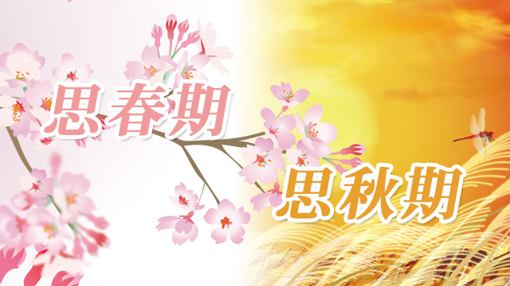

前回の記事で、私は思春期の子どもたちについて、彼らがなぜ自分の「思春期の記憶」を失くしているのか、その健忘症のワケをあれこれ考えてみたのでした。
前回の記事はこちら（思春期の子どもたちが愛すべき存在に見えるとき）
そして健忘症の理由の一つに、忘れるからこそ大人になれるという重大な仮説（？）を唱えたのですが、では忘れられた記憶はその後どうなってしまうのでしょうか。今日はちょっとそのことを考えてみたいと思います。
よくこんな話を聞く事があります。
いい年をした中高年のオジさんたち（笑）が、バンドを組んで音楽活動をしたり、急にカメラを担いで撮影旅行に出かけたり、子どもの頃好きだったプラモデル作りに凝りだす！
これはもちろんオジさんたちばかりではありません。
オバさん…（失礼！）たちも、ちょうど子育てが一段落したことになると近所の合唱団に入ったり、学生時代の勉強をやり直そうと「源氏物語」を読むサークルに加入するとか、昔好きだったこと、かつて興味があったがやらなかったことを始めたりすることがあります。
これは若いころの夢を再び追い始めただけのようにも見えますが、ここには案外深い意味があるような気がします。
人は一般に、成人すると「社会的役割」という仮面をつけて生きていきます。
銀行員なら銀行員としての仮面。
学校の先生なら教師という仮面。
営業マンなら営業マンの。
主婦なら主婦の。
母なら母の。
仮面を意識するにせよしないにせよ、身につけている。
もちろん仮面は一つだけではありません。外では職業に見合った仮面。家へ帰れば夫であり父である、それぞれに見合った仮面を被るでしょう。
いずれにしても、それは社会的に期待される役割を担う上での必要な行動様式であるわけです。
しかし、大人になって以来ずっと被り続けてきた仮面を脱ぎたくなる時が来ます。
それがたいてい40～50代に差しかかった時期。
大人になること。社会人として生きていくということは、若いころの様々な夢や可能性をあきらめたり忘れたり、抑圧して来たとも言えるわけで、子育てが一息ついた、会社での将来が見えてきたとき、それら心の底に抑え込んできた夢が再びあらわれるのでしょう。
ある意味、人生の生き直しといって良いでしょう。
シンクロするアイデンティティの危機
つまりこういうことです。
人間、40歳を過ぎたころから「私の人生このままで良いのかしら」という疑問というか、不安がわき起こってくる。
「このまま年を取って最後に後悔しないだろうか」
そこで初めて、人はこれまで演じてきた母（父）親の役割とか職業人としての役割そのものにも疑問を投げかける。
そしてこれまでいかに若い頃の夢や希望、その他多くの可能性をうち捨ててしまったのかに気づくわけです。
ユングの言う「生きられなかった過去」ですね。
さて、ここまでの話どこかで聞いたような気がしないでしょうか？
というか似ていませんか？
そう、まさに子どもの思春期と同じ。
何が同じかというと、一言でいってアイデンティティの危機ということです。
自分とは何者か。果てして本当の自分とはどういう存在なのかという、根源的な問いを抱えてしまう。
そういう意味で、中年期と思春期はシンクロしているといえるでしょう。
俗にいう「中年の危機」とは、子どもの思春期のようにアイデンティティが揺らいでいて、迷いが生じ精神的に不安定になりやすいことから名づけられたものです。
またまた私の勝手な呼び名ですが、中年の危機とはすなわち第2の思春期でもあるのです。
（※ちなみに心理学者の河合隼雄はこれを「思秋期」と呼んでいる）
親が「生き直し」をすれば子どもも変わる
さて、ここまでお読みになった方はそろそろ次の展開が見えたのではないでしょうか。
そうです。
思春期の子どもを抱えた家庭は親も第2思春期を迎えている。
思春期で不安定な子どもと、中年の危機に差しかかった不安定な親が一つ屋根の下に住んでいる。
不安定と不安定のぶつかり合い。
そこから起こる悲喜劇。
そういう、ちょっとしたホラーな光景（笑）がそこに見えているのです。
ホラーと言ってしまいましたが、親子共々人生の「危機」に直面することで色々なドラマが起こってしまうのです。
子どもは自分のアイデンティティ（自分らしさ）を求めて、様々な可能性を試してみたくなる。
たとえば…
- 根はマジメなのに不良にあこがれてしまう
- 芸能人やヒーローと同一化して理想を求める
- 妙にマイナーな趣味に没頭する
- やたらと反抗したり逸脱行為に走る
確かにここには危険もあるでしょう。
「人生で一番ヘンな時期である」と私がいつも言うように、自分の中の「可能性」に翻弄され不安定になっているからです。
しかしそれは親も同じ。
人生の折り返し地点に立ち、それまでの前半生を振り返って「自分の人生これでよかったのか」と疑問や不安にとらわれているからです。
だからこの時期の様々な問題は、親と子どちらかに原因があるというより両者のぶつかり合いであることが多いのです。
親はよく「子どもが反抗的」とか「勉強しなくて困る」などと、さも子どもに原因があるかのように言いますが、そうではなく自分の心の「不安定」を子どもに投影していることも多い。
あるいは親の「不安定」こそが子どもの問題行動を引き起こしていることさえあるのです。
たとえば、親のあなたが「若い頃もう少し勉強しておけばよかった」という思いをもっていたとします。「あの時もっとガンバっておけば違う人生になっていたかも知れない」という後悔の念にさいなまれていたとします。
そんなとき、あなたの子どもが「勉強しないでソファでゴロゴロ寝転んでいる」のを見たら、強い怒りを感じ必要以上に子どもに厳しく当たってしまうかも知れません。
子どもがソファで寝ている。
このこと自体は必ずしも悪いことではありません。ただの事実です。
そこに勉強もしないでソファでゴロゴロ寝ているとネガティブに解釈しているのです。
（赤字の部分が親の囚われ）
我が子の寝顔を見て「ああ寝顔はあどけないな。この子が幼いころを思い出すわ~」とホンワカした気持ちになることもできたはずです。
それなのに、親が自分の「不安」を投影し過剰に子どもを心配し不当なまでにマイナス評価をしてしまう。
結果、子どもは「少し寝たらやろうと思ってたのに、うるさく言うからヤル気失くした！」などとフテくされ、それがまた親の怒りに油を注ぎ…と負のスパイラルにおちいるわけです。
これは悲劇でしょうか。喜劇でしょうか。
（私にはどちらかといえば喜劇に見えてしまいますが…）
思春期と第2思春期（思秋期）。
この2つのぶつかり合いを悲劇にしないために親のできることは何でしょう。
私はやはり、まず親が子どもの方ばかり見るのではなく、自分の心の中をこそ点検して欲しいと思います。
自分はいま第2の思春期で不安定になっていないかどうか。
そしてもし、やり残したことやこれから挑戦してみたいことがあるのなら思い切ってやってみる。自分自身の後半生を豊かに生きるためにも人生を再設計してみる。
それは楽しい時間になるでしょう。
冒頭の、バンドを組むオジさんたちやオバさんたちのような試みも参考になるかも知れません。
そうやって親自身が「自分のすべきこと」をしてイキイキとしていたら、子どもも自ずと自分のすべきことをするようになるでしょう。
その上で、我が子の「豊かな可能性」をいつも見つめてあげてください。
もし、あなたが自分の思春期を忘れているなら我が子から学ぶことができるかも知れません。
忘れていた思春期を思い出すことが、あなた自身の「生き直し」のヒントにつながるでしょう。